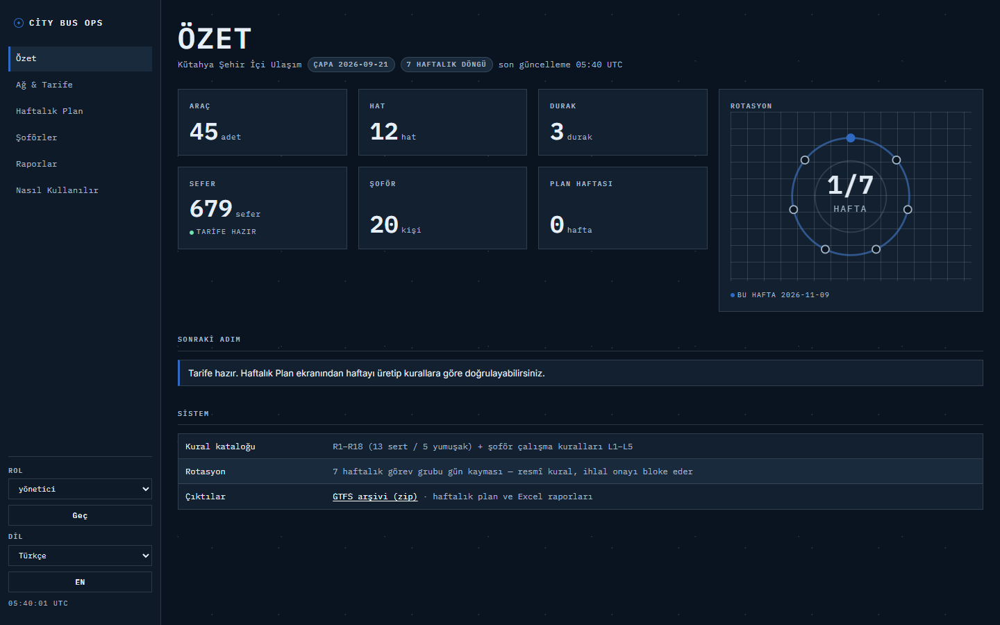
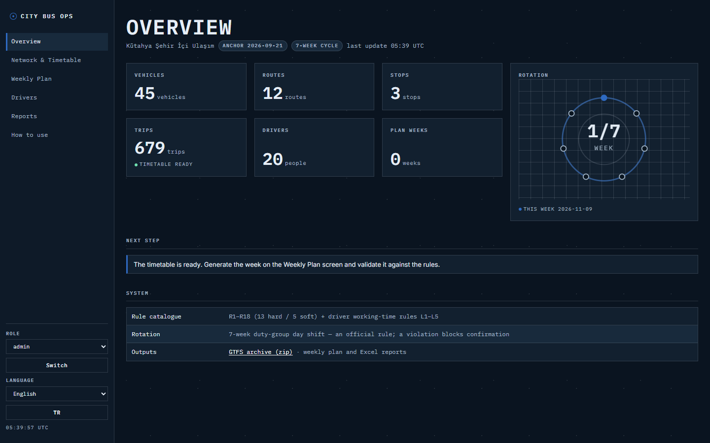
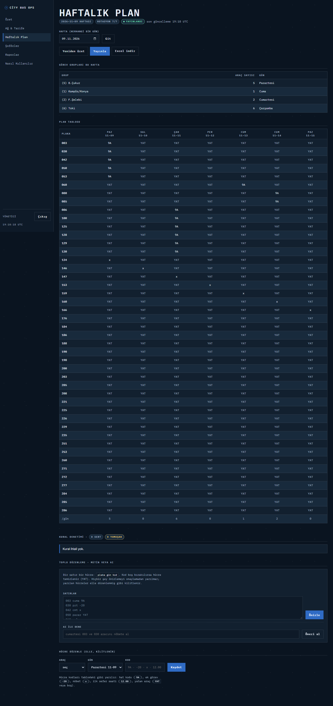
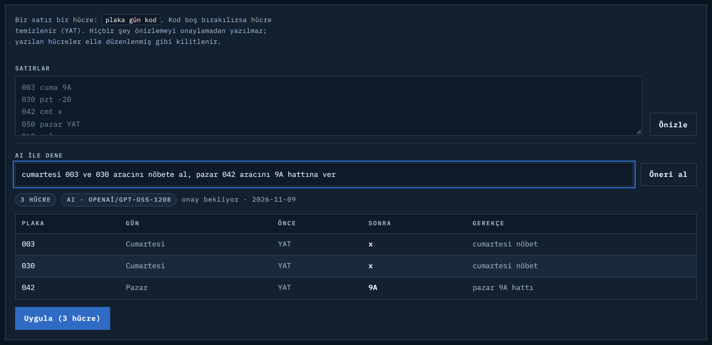
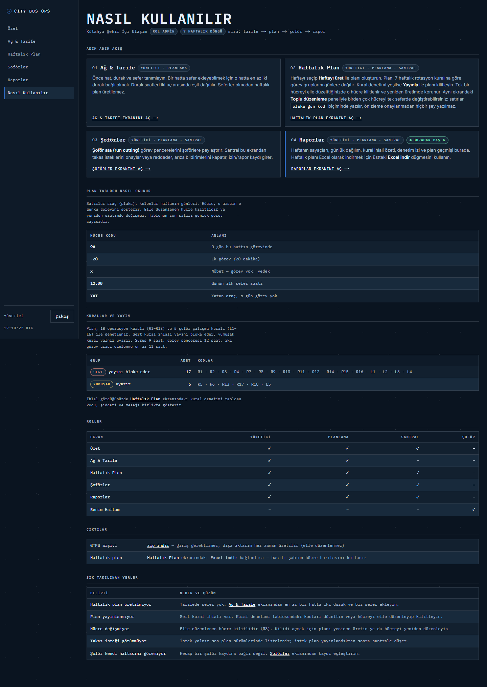

Windows masaüstü · çevrimdışıWindows desktop · offline
Rotasyon kanununu bilen görev planı. The duty plan that knows the rotation law.
Belediye şehir içi otobüs deposu için araç bloklama, şoför görevleri, 7 haftalık rotasyon ve basılı haftalık tablo — tek iş istasyonunda, sunucusuz ve ağsız. Tek kullanıcılı Excel akışının yerine kuralları bilen, denetim izi tutan bir araç. Vehicle blocking, driver duties, the 7-week rotation and the printed weekly sheet for a municipal city-bus depot — on one workstation, with no server and no network. It replaces a single-user Excel workflow with a tool that knows the rules and keeps an audit trail.


KapsamScope
Planlamanın tamamı, tek araçta The whole planning job, one tool
Standartların modellemediği her şey — nöbet günleri, 7 haftalık rotasyon, ek görev kodları, serbest metinli hücre notları — belgelenmiş x_ ek tablolarında durur ve ham metnini korur.
Everything the standards do not model — standby days, the 7-week rotation, extra-duty codes, free-text cell notes — lives in documented x_ extension tables and keeps its raw text.
-
01 · Ağ01 · Network
Ağ ve tarifeNetwork and timetables
Hatlar, duraklar ve gün tipine göre tarife: hafta içi, cumartesi, pazar. Sefer bazlı kalkışlar.Routes, stops and per-day-type timetables: weekday, Saturday, Sunday. Departures down to the trip.
-
02 · Filo02 · Fleet
Araç bloklamaVehicle blocking
Hangi plaka ne zaman yolda: filoyu görevlere böl, günlük araç sayısını doğru tut.Which plate is on the road when: block the fleet into duties and keep the daily vehicle count right.
-
03 · Hafta03 · Week
Haftalık planWeekly plan
Deterministik hafta üretimi, kilitli hücre düzenleme, denetim kaydıyla yayınlama.Deterministic week generation, locked-cell editing, publish with an audit entry.
-
04 · Kural04 · Law
Rotasyon kanunuRotation law
7 haftalık görev grubu döngüsü resmî kural setiyle. İhlal yayını bloke eder, uyarı vermez.Seven-week duty-group rotation with the official rule set. A violation blocks the publish; it is not a warning.
-
05 · Şoför05 · Drivers
Şoförler ve şoför ekranıDrivers and the driver screen
Tarifeden run cutting, roster, izin, takas talebi, arıza bildirimi. Şoför için "haftam" ekranı — planlama yetkisi yok.Run cutting from the timetable, roster, absences, swap requests, defect reports. A "my week" screen for drivers — with no planner access.
-
06 · Çıktı06 · Output
ÇıktılarOutputs
Operatörün basılı haftalık tablosu (şablon v2.0 hücre haritası, Excel), GTFS Schedule zip, TODS 2.1.The operator's printed weekly sheet (template v2.0 cell map, Excel), GTFS Schedule zip, TODS 2.1.
-
07 · Asistan07 · Assistant
Planlama asistanıPlanning assistant
Tek Türkçe cümle → sınırlı, doğrulanmış hücre düzenleme listesi. Öneri fark olarak görünür, insan onayı olmadan yazmaz. Varsayılan kapalı.One Turkish sentence becomes a bounded, validated list of cell edits. Proposals appear as a diff and are never written without a human confirming. Off by default.
-
08 · Kurulum08 · Install
Çevrimdışı kurulumOffline install
Gömülü SQLite ile Windows kurulumu: sunucu yok, veritabanı servisi yok, tarayıcı yok. Veri, yedek ve günlükler
%APPDATA%\CityBusOps\altında.A Windows install with embedded SQLite: no server, no database service, no browser. Data, backups and logs stay in%APPDATA%\CityBusOps\.
Kanun, öneri değilA law, not a suggestion
Yedi hafta, sabit sıra, adil erken vardiya Seven weeks, a fixed order, a fair share of early shifts
Araç görev grupları yedi hafta boyunca sabit bir sırayla döner; her grubun vardiya deseni (erken / gündüz / geç / izin) döngüdeki konumundan türetilir. Erken vardiyaların döngü boyunca adil dağıtımı kural setinin parçasıdır. Vehicle duty groups rotate through seven weeks on a fixed schedule, and each group's shift pattern (early / day / late / off) is derived from its position in the cycle. The fair distribution of early shifts across the cycle is part of the rule set.
generateWeek() ya kurala uyan bir hafta üretir ya da hangi kuralın nerede ihlal edildiğini söyler. "Yine de yayınla" düğmesi yoktur.
generateWeek() either produces a week that satisfies it or reports which rule failed and where. There is no "publish anyway" button.
- DöngüCycle
- 7 haftaweeks
- Sert kuralHard rules
- 13 bloke ederblock
- Yumuşak kuralSoft rules
- 5 uyarırwarn
- Çalışma kuralıLabour rules
- L1–L5 şoför × haftadriver × week
Rotasyon kadranıRotation dial 7 haftalık döngü7-week cycle
Kadran, uygulamanın özet ekranındaki gerçek veriyi gösterir: döngü konumu cyclePosition alanından gelir.
The dial shows the same data the app's overview screen does: the cycle position comes from cyclePosition.
EkranlarScreens
Bir depo masasının gördüğü şey What a depot desk actually sees
Arayüz Türkçe ve İngilizce gelir; seçim kenar çubuğundan yapılır ve çerezde saklanır. Her ekran, kural adı ve ihlal cümlesi aynı sözlükten okunur — eksik çeviri derlemeyi kırar. The interface ships in Turkish and English; the switch lives in the sidebar and is remembered in a cookie. Every screen, rule title and violation sentence reads from the same dictionary — a missing translation fails the build.



İndirDownload
0.1.0 · Windows x64 0.1.0 · Windows x64
Uygulamanın tamamı tek iş istasyonunda: Electron kabuğu, Next.js standalone sunucu ve gömülü SQLite dosyası. İlk açılışta SQLite temeli uygulanır ve demo veri yüklenir (45 plaka, 12 hat, 4 görev grubu, 20 demo şoför, demo tarife), uygulama hemen kullanılabilir. The whole app on one workstation: an Electron shell, a Next.js standalone server and an embedded SQLite file. The first launch applies the SQLite baseline and seeds demo data (45 plates, 12 routes, 4 duty groups, 20 demo drivers, a demo timetable), so it is usable immediately.
İmzasız derlemeUnsigned build
Bu dosyalar kod imzalı değildir. Windows Smart App Control ve SmartScreen internetten indirilen imzasız bir exe'yi engeller: dosyayı engelden çıkarın (Özellikler → Engellemeyi kaldır) ve operatöre gitmeden önce kod imzalama sertifikası alın.
These binaries are not code-signed. Windows Smart App Control and SmartScreen block an unsigned executable downloaded from the internet: unblock the file (Properties → Unblock), and get a code-signing certificate before it reaches an operator.
DoğrulamaVerify
Get-FileHash .\CityBusOps-0.1.0-x64.exe -Algorithm SHA256
- x64
f66fb16ae5de84e2- portable
f8b1bacc321758c1
DokümantasyonDocumentation
Kararlar yazılı, kurallar katalogda Decisions are written, rules live in a catalogue
- README Ürünün tamamı: mimari, komutlar, doğrulama, yol haritası. The whole product: architecture, commands, verification, roadmap.
- R1–R18 · F1–F5 Kural kataloğu ve rotasyon kanununun yazılı kaydı. The rule catalogue and the written record of the rotation law.
-
Data model
Üç katmanlı model ve
x_ek şema alanı. The three-layer model and thex_extension namespace. - Desktop Masaüstü kararları, paketleme, tuzaklar ve yayın kapısı. Desktop decisions, packaging, traps and the release gate.
- Assistant Asistan sözleşmesi, istem, doğrulama ve gizlilik. Assistant contract, prompt, validation and privacy.
- TESTING Demo veri, hesaplar, elle gezinme ve smoke betiği. Demo data, accounts, a manual walkthrough and the smoke script.